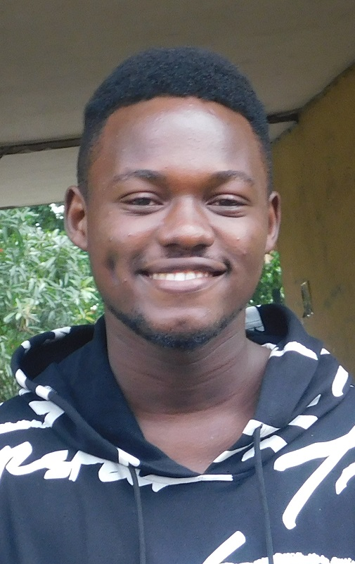

2, Emere via Ilupeju • Abeokuta, Ogun State • +234-8140383508 • gerald.direxx@gmail.com

Qualifications
|
Skills |
Analytical Skills: Able to utilize strong math skills, team orientation, and interpersonal strengths to ensure a well analyzed conclusion is reached. Communication & Presentation: Charismatic communicator in speech and in writing. Build lasting relationships with peers. Basic French and Italian knowledge. Organization / Computer Skills: Outstanding time-management and organizational abilities. Technical proficiencies include Microsoft Office Suite and social media. Basic Programming Knowledge in C#, Java. Basic Knowledge of Web Development Skills (HTML and CSS).
Key Strengths: Hard-working, Intelligent and loyal team member, Problem-solving and logical thinking, readily listening to others, acknowledging peer accomplishment, and contributing to positive and productive work environments and team morale. |
Education |
B.Sc. Systems Engineering (Anticipated August 2022);
University Of Lagos, Akoka, Lagos.
Member, Rotaract Club; Member, University Of Lagos Energy Club.
|
Experience Highlights |
UNIVERSITY OF LAGOS, Akoka, Lagos
Student, Systems Engineering
(2017-Present)
Currently pursuing comprehensive five-year course of study in systems engineering, laying solid groundwork for eventual career in new growing technological ecosystems. Completed coursework includes calculus, statistics, and applied mathematics.
Enthusiastically led class tutorial
- Volunteered as part of media team PAADC 3.0 2019.
|